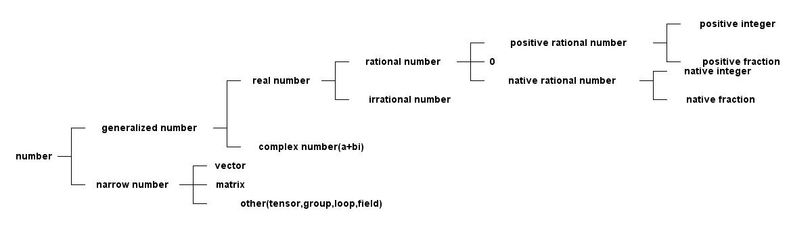
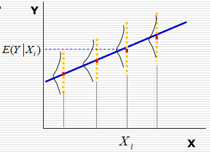

数学
1 代数
1.1 概念
1.1.1 数域
- 自然数：natural number，{0，1，2，3…}等全体非负整数组成的数的集合称为自然数；
- 正整数：positive integer，{1，2，3…}等向前扩充的数称为正整数；
- 负整数：{1，2，3…}等向后扩充的数称为妇整数；
- 中性数：0被称为中性数；
- 整数： integer，把正整数、负整数、中性数(0)合在一起叫整数，对＋、－、×运算组成一个封闭的数域集合；
- 有理数：rational number，整数对÷不封闭，有理数则在整数基础上对÷封闭的数域，或者可以表示成两个整数之比;
- 无理数：irrational number，不能表示成2个整数之比的数，比如\(\sqrt{2}\)和圆周率；
- 实数：real number，有理数和无理数合到一起称为实数；
- 虚数：imaginary number，符号用i表示，i = \(\sqrt{-1}\)；
- 复数：complex number，由实数和虚数构造出的数叫复数, 复数的表示方式有；
- 点表示：由复平面上的点一一对应复数；
- 向量表示：和点表示类似, 同时也就有了幅度r和辐角\(\theta\)的说法；
- 三角表示法：\(z=r(cos(\theta)+i\sin(\theta))\)
- 指数表示法：由欧拉公式得\(z=re^{i\theta}\)
- 向量：vector；
- 矩阵：matrix；
- 张量：tensor；
- 群：group；
- 环：loop；
- 域：field；
- 线性代数：研究未知数更多的一次方程组，引进矩阵、向量、空间等概念形成的方向；
- 多项式代数：研究未知数次数更高的高次方程，形成的方向；

数的归纳
1.1.2 其他
- 自然底数：e表示自然底数，近似等于2.71828；
- 指数：是有理数乘方的一种运算形式，它表示的是几个相同因数相乘的关系，2的3 次方=2×2×2=8。2的3次方这里2是底数；3是指数；8是结果；
- 指数函数：形如\(y=a^{x}\)的函数叫做指数函数, 常以e作为底；
- 对数：如果a的x次方等于N（a>0，且a不等于1），那么数x叫做以a为底N的对数 （logarithm），记作\(x=log_{a}N\)。其中，a叫做对数的底数，N叫做真数。 常 用以10为底和以e为底的对数；
- 对数函数：函数\(y=log_{a}x\)叫做对数函数, a常常等于e；
1.2 复数
实数代表一维数轴上的所有点，复数代表二维几何平面上的所有点。复数集和复平面 内所有点一一对应，也和复平面内的向量一一对应
复数的本质就是旋转，4*i*i = -4, 就是4在数轴上旋转180度，那么4*i就是旋转90度。 在二维XY平面上，X轴就是实数轴，Y轴就是虚数轴。也就是使用复数i参与运算，就意 味着旋转。使用如下python代码就可以画出此3d图形。从图中可以看出虚轴和实轴随 着t的增加而旋转向上，非常相似电磁波的传播，电场和磁场基本信号单位也是cos和 sin信号，随着时间t变化，并且始终正交。由sin和cos信号变化构成了电磁场不断随 着时间t向前旋转传播。所以复指数信号或欧拉公式可以完美的表示电磁场以及信号。 复指数信号\(e^{jwt}\)的w表示频率，一般w都为正值，也就代表随着时间t的变化往 前传播，而还会碰到-w的情况\(e^{jwt}\)，叫做负频率，代表了逆着时间的方向传播， 所以在现实生活中难以想象负频率的情况，因为时间不可倒流。
import numpy as np
import pylab as pl
from mpl_toolkits.mplot3d import Axes3D
import signalfun as sf
fig = pl.figure()
t = np.arange(0, 8*np.pi, 0.01)
x = np.cos(t)
y = np.sin(t)
ax = fig.add_subplot(111, projection='3d')
ax.plot(x, y, t)
ax.set_xlabel('x')
ax.set_ylabel('y')
ax.set_zlabel('t')
pl.show()
- 模：复数z=a+bi的模表示为\(|z| = \sqrt{a^{2}+b^{2}}\), \(|z|=1\)表示单位圆， \(|z|<1\)表示单位圆内部的复数点；
- 共轭复数：实部a相等，虚部互为相反数的两个复数共轭，几何上两者关于实轴对称；
- 复数乘法：复数乘积的模等于他们的模相乘，辐角等于他们的辐角相加；
- 复数除法：复数除法的模等于它们的模的商，辐角等于被除数和除数的辐角之差；
1.2.1 复变函数
设G是一个复数z=x+iy的非空集合，存在法则f使得将z变换到另一个复数域w=u+iv, 记 做w=f(z)；
复变函数展示的就是空间的映射，可以一对一也可以一对多。
1.3 多项式
1.3.1 概念
- 最大公因式：设f(x), g(x)是P[x]中两个多项式。P[x]中多项式d(x)称为f(x), g(x)的一个最大公因式，如果它满足
- d(x)是f(x)，g(x)的公因式；
- f(x)，g(x) 的公因式全是d(x)的因式；
- 多项式互素：P[x]中两个多项式f(x)，g(x)称为互素(互质)，如果(f(x), g(x))=1; ((f(x), g(x))表示首项系数是1的最大公因式)；
- 重因式：不可约多项式p(x)称为多项式f(x)的k重因式，如果\(p^{k}x | f(x)\)，而\(p^{k+1}x ! f(x)\); (g(x)|f(x)表示g(x)能整 除f(x)) ;
- 多项式微商: 对多项式求导；
- 本原多项式：如果一个非零的整系数多项式\(g(x)=b_{n}x^{n}+b_{n-1}x^{n-1}+……+b_{0}\) 的系数\(b_{n}, b_{n-1}, ……，b_{0}\) 没有异于±1的公因子，也就说它们是互素的，这个多项式被称为本原多项式；
- 本原多项式定理(高斯引理)：两个本原多项式的乘积还是本原多项式；
- 对称多项式：设\(f(x_{1}, x_{2}, ……, x_{n})\)是数环R上一个n元多项式，如果对于这n个文字\(x_{1}, x_{2}, ……, x_{n}\)的 指标集{1, 2, ……, n}施行任意置换后，\(f(x_{1}, x_{2}, ……, x_{n})\)都不改变，那么就称\(f(x_{1}, x_{2}, ……, x_{n})\) 是R上一个n元对称多项式；
1.3.2 满足定律
- 加法交换律, f(x)+g(x)=g(x)+f(x)；
- 加法结合律, (f(x)+g(x))+h(x) = f(x)+(g(x)+h(x));
- 乘法交换律, f(x)g(x)=g(x)f(x);
- 乘法结合律, (f(x)g(x))h(x)=f(x)(g(x)h(x));
- 乘法对加法的分配律, f(x)(g(x)+h(x))=f(x)g(x)+f(x)h(x);
- 乘法消去律, f(x)g(x)=f(x)h(x)且f(x) \(\neq\) 0, 那么g(x)=h(x);
- 任何n(n>0)次多项式在复数域中有n个根(重根按重数计算)
1.3.3 公式
- 多项式乘法，f(x)g(x) = \(\sum_{i=0}^{n}a_{i}x^{i}\) \(\sum_{j=0}^{m}b_{j}x^{j}\) = \(\sum\limits_{s=0}^{m+n}(\sum\limits_{i+j}a_{i}b_{j})x^{s}\)
- 多项式微商：
- (f(x)+g(x))' = f'(x) + g'(x);
- (cf(x))' = cf'(x);
- (f(x)g(x))' = f'(x)g(x) + f(x)g'(x);
- \((f^{m}(x))' = mf^{m-1}(x)f'(x)\)
1.3.4 应用
1.3.4.1 多项式拟合
- 概念：根据给定的m个点，并不要求这条曲线经过这些点，而是y=f(x)的近似曲线y=\(\Phi(x)\)；
1.4 微积分
- 方向导数：偏导数反映的是函数沿着坐标轴方向的变化率。然而在实际问题中很多 变化不是在一个固定的方向，这时就需要定义方向导数。方向导数是沿着一定方向 的变化率的问题，方向导数是一个 标量 。
- 梯度：函数在某点的梯度是这样一个向量，它的方向与取得最大方向导数的方向一
致，而它的摸为方向导数的最大值，梯度的模如下，梯度是一个 向量 ，梯度与
方向导数关系，设\(e_{l}\)是方向导数的方向向量和梯度的夹角为\(\theta\)。
$$\bigtriangledown{f(x, y)}=\sqrt{(\frac{\partial{f}}{\partial{x}})^{2}+(\frac{\partial{f}}{\partial{y}})^{2}}$$
- 当\(\theta=0\)，即方向\(e_{l}\)与梯度\(\bigtriangledown{f(x_{0},y_{0})}\) 方向相同时，函数f(x, y)增加最快。此时函数在这个方向的方向导数达到最大 值，这个最大值就是梯度\(\bigtriangledown{f(x_{0},y_{0})}\)的模，这也表 明函数f(x, y) 在一点的梯度\(\bigtriangledown{f}\)是这样一个向量，它的 方向是函数在这点的方向导数取得最大值的方向，它的模就等于方向导数的最大 值。 $$\frac{\partial{f}}{\partial{l}}|_{(x_{0}, y_{0})}=|\bigtriangledown{f(x_{0}, y_{0})}|$$
- 当\(\theta=\pi\), 即方向\(e_{l}\)与梯度\(\bigtriangledown{f(x_{0},y_{0})}\) 方向相反时，函数f(x, y)减小最快，函数在这个方向的方向导数达到最小值 $$\frac{\partial{f}}{\partial{l}}|_{(x_{0}, y_{0})}=-|\bigtriangledown{f(x_{0}, y_{0})}|$$
- 当\(\theta=\frac{\pi}{2}\), 即方向\(e_{l}\)与梯度\(\bigtriangledown{f(x_{0},y_{0})}\) 的方向正交时，函数变化率为0。 $$\frac{\partial{f}}{\partial{l}}|_{(x_{0}, y_{0})}=-|\bigtriangledown{f(x_{0}, y_{0})}|\cos(\theta)=0$$
- 泰勒级数：若函数f(x)在含义\(x_{0}\)的某个开区间(a, b)内具有直到(n+1)阶的 导数，则当x在(a, b)内时，有下面的n阶泰勒公式成立 $$f(x)=f(x_{0})+f'(x_{0})(x-x_{0})+\frac{f^{(n)}(x_{0})}{n!}(x-x_{n})^{n}+\frac{f^{(n+1)}(x_{0}+\theta(x-x_{0}))}{(n+1)!}(x-x_{0})^{n+1},(0<\theta<1)$$
2 微积分
- 欧拉转换 $$e^{jx}=cos(x)+jsin(x)$$ 和 $$cos(x)=\frac{e^{jx}+e^{-jx}}{2}$$
- 极值：函数f在某区间存在一阶和二阶导数，则
- 极小值：如果二阶导数大于0，一阶导数等于0的地方就是极小值；
- 极大值：如果二阶导数小于0，一阶导数等于0的地方就是极大值；
2.1 梯度
函数f(x, y)的梯度由下式表示 $$ \triangledown{}f(x, y) = \begin{pmatrix} \frac{\partial{}f(x, y)}{\partial{}x} \\ \frac{\partial{}f(x, y)}{\partial{}y} \\ \end{pmatrix} $$ 梯度意味着要沿x的方向移动\(\frac{\partial{}f(x, y)}{\partial{}x}\), 沿y方向 移动\(\frac{\partial{}f(x, y)}{\partial{}y}\)，其中f(x, y)必须要在待计算的 点上有定义且可微。梯度是有方向的，总是沿着函数值上升最快的方向移动，因此沿 梯度方向或者反方向进行时，就能达到一个函数的最大值或者最小值，因此梯度上升 算法就是不断更新梯度值，直到梯度不再变化或者变化很小，即函数达到最大值梯度 算法的迭代公式为（α是步长，即每一步移动量）： $$w := w+\alpha{}\triangledown_{w}f(w)$$
3 矩阵
3.1 概念
矩阵实际上是高等线性函数的系数，线性函数就是线性变换的表达式, 可以说向量是 标量的数组，矩阵则是向量的数组，向量的维度指它包含的标量数的个数，矩阵的维 度表示包含的向量的个数或者多少行多少列。矩阵就核心的代表了线性变换。因为 \(y=Kx\)就是一个向量x通过矩阵K变换为一个向量y，向量x、y各自可以看做一段有向 线段，那就是说线性变换就是把一个线段变成另一个线段。因此一个矩阵对应一个线 性变换，反之亦然。
- 范数：设V是实数域R(或复数域C)上的n维线性空间，对于V中的任意一个向量或矩阵 α 按照某一确定法则对应着一个实数，这个实数称为 α 的 范数 , 记 为||α||，几范数就是元素几次方的和，除以维数；通俗的理解范数其实是将 一个事物映射到非负实数域，具有“长度”，“大小”概念；
- 向量点积：设两个向量的坐标表示为\(a=(a_{x}, a_{y}, a_{z}), b=(b_{x}, b_{y}, b_{z})\), 则向量a和b的内积表示如下； $$a.b=(|a||b|\cos{\theta})=(a_{x}b_{x}+a_{y}b_{y}+a_{z}b_{z})$$
- 向量叉积：设两个向量的坐标表示为\(a=(a_{x}, a_{y}, a_{z}), b=(b_{x}, b_{y}, b_{z})\), 则向量a和b的叉积表示为, 其中\(n_{0}\)表示ab平面的法向量 单位向量 $$axb=(|a||b|\sin{\theta}n_{0})=(a_{y}b_{z}-a_{z}b_{y}, a_{z}b_{x}-a_{x}b_{z}, a_{x}b_{y}-a_{y}b_{x})$$
- 余子式：余子式是一个矩阵，而代数余子式是一个标量；
- 标准伴随矩阵：矩阵的所有代数余子式构成的矩阵的转置，用adj表示；
- 奇异矩阵：矩阵的行列式为0，表示该矩阵是奇异的，反之亦然；
- 矩阵的逆：奇异矩阵没有逆矩阵，反之亦然，计算公式如下 $$M^{-1}=\frac{adj(M)}{|M|}$$
- 正交矩阵：若方阵M是正交的，则当且仅当M与它转置MT的乘积等于单位阵。也就 是如果一个矩阵是正交的，则它的转置等于它的逆；
3.2 向量
- 向量的导数：其中A是矩阵，x是一个n维向量。 $$\frac{\partial{AX}}{\partial{X}} = A^{T}$$ 和 $$\frac{\partial{X^{T}A}}{\partial{X}}=A$$
3.3 行列式
只有方阵才有行列式的意义，非方阵的行列式未定义。
- 在2维中，行列式等于以基向量为两边的平行四边形的有符号面积，也就是面积可能为负。
- 在3维中，行列式等于以基向量为三边的平行六面体的有符号体积。如果矩阵变换 是的平行六面体“由里向外”翻转，则行列式变负。
行列式和矩阵变换导致的尺寸改变相关。其中行列式的绝对值和面积(2D), 体积(3D) 的改变相关。行列式的符号说明了变换矩阵是否包含镜像或投影。矩阵行列式为0，表 示该矩阵包含投影变换，为负，表示包含镜像。
3.4 物理意义
3.4.1 矩阵的逆
矩阵的逆可以撤销原变换的变换，一个向量v用矩阵M进行变换，接着用M的逆M-1进 行变换，将会得到原向量v。
3.4.2 正交矩阵
旋转矩阵和镜像矩阵都是正交的。有时由外部数据构成的矩阵，由于可能存在部分坏 数据，常常需要对矩阵做正交化，这个矩阵要尽可能的和原矩阵相同，常常使用的方 法是施密特正交化，构造一组正交基向量(矩阵的行)。
- 正交区别：向量也有正交的定义，由于矩阵是一组向量构成。向量正交指两个向量 之间的正交性，矩阵正交指矩阵内部各个行向量或者列向量之间的互相正交，因为 由于有\(MM^{T}=I\)，所以表示每个矩阵内部向量除了和自身点积不为0，其他都是 0，也就类似向量的正交。
3.4.3 变换
向量在几何上能被解释成一系列与轴平行的位移，如向量[1, -3, -4]能被解释成位移 [1, 0, 0]随后位移[0，-3, 0]在位移[0, 0，4]这个位移序列可以解释成向量的加法 如式子\(\begin{bmatrix} \label{equ-vec-add} 1\\ -3\\ 4\\ \end{bmatrix}\) = \(\begin{bmatrix} 1\\ 0 \\ 0 \\ \end{bmatrix}\) + \(\begin{bmatrix} 0\\ -3 \\ 0 \\ \end{bmatrix}\) + \(\begin{bmatrix} 0\\ 0 \\ 4 \\ \end{bmatrix}\) 如果将p、g、r定义为指向+x, +y, +z方向的单位向量，则equ-vec-add可以表 示为$$v=1*p+(-3)*g+4*r$$ 现在向量v就被表示成向量p、g、r的线性变换。向量p、g、 r称为基向量。以p、g、r为行构建一个3x3的矩阵M就得到如下矩阵。 $$ M=\begin{bmatrix} p\\ q\\ r\\ \end{bmatrix}= \begin{bmatrix} p_{x} & p_{y} & p_{z}\\ q_{x} & q_{y} & q_{z}\\ r_{x} & r_{y} & r_{z}\\ \end{bmatrix} $$ 用一个向量乘以该矩阵得到 $$ \begin{bmatrix} x & y & z\\ \end{bmatrix} \begin{bmatrix} p_{x} & p_{y} & p_{z}\\ q_{x} & q_{y} & q_{z}\\ r_{x} & r_{y} & r_{z}\\ \end{bmatrix} = \begin{bmatrix} xp_{x}+yq_{x}+zr_{x} & xp_{y}+yq_{y}+zr_{y} & xp_{z}+yq_{z}+zr_{z}\\ \end{bmatrix} = xp+yq+zr $$ 由此发现如果把矩阵的行解释为坐标系的基向量，那么乘以该矩阵就相当于执行了一 次坐标转换。或者可以解释为矩阵的每一行为转换后的基向量。坦率的说矩阵并不神 秘，它只是用一种紧凑的方式来表达坐标转换所需的数学运算，另外多种变换还可以 组合成一个综合的矩阵进行一次性的变换。
3.4.4 逆变换
如果存在一个逆变换可以撤销原变换，那么该变换是可逆的变换。旋转、缩放、镜像、 切变等都是可逆变换，但是投影是非可逆变换，因为投影损失了一个维度的信息。因 为任意线性变换都能表达为矩阵，所以求逆变换等价于求矩阵的逆。如果矩阵是奇异 的，则变换不可逆。可逆矩阵的行列式不为0.
3.4.5 等角变换
如果变换前后两向量夹角的大小和方向都不改变，该变换是等角的。只有平移，旋转 和均匀缩放是等角变换。等角变换将会保持比例不变。镜像不是等角变换，因为尽管 两向量夹角的大小不变，但夹角的方向改变了。所有的等角变换都是仿射和可逆的。
3.4.6 正交变换
正交用来描述具有某种性质的矩阵，正交变换的基本思想是轴保持相互垂直，并且不 进行缩放变换。只有平移、旋转、镜像是正交变换，其长度，角度，面积和体积都保 持不变。所有正交矩阵都是仿射和可逆的。
3.4.7 刚体变换
刚体变换只改变物体的位置和方向，不包括形状，所有长度，角度，面积，体积都不 变，平移和旋转是仅有的刚体变换。刚体变换也被称为正规变换。所有刚体变换都是 正交、等角、可逆、仿射的变换。
3.4.8 旋转
- 二维：基向量\(p=[1, 0], q=[0, 1]\)构成的合向量，绕原点旋转，得到新的基向 量\(p', q'\),其旋转角度为\(\theta\), 则从几何图形也可以计算出旋转矩阵表示 为如下 $$ R(\theta)= \begin{bmatrix} p' \\ q'\\ \end{bmatrix} = \begin{bmatrix} cos(\theta) & sin(\theta) \\ -sin(\theta) & cos(\theta) \\ \end{bmatrix} $$
- 三维：基向量\(p=[1, 0, 0], q=[0, 1, 0], r=[0, 0, 1]\)构成的合向量, 可以绕
x或y或z旋转或者任意轴，如果只是绕xyz轴旋转，则实际只在垂直旋转轴的平面上
做二维旋转。
- 绕x旋转\(\theta\)角的矩阵 $$ R_{x}(\theta) = \begin{bmatrix} p' \\ q' \\ r'\\ \end{bmatrix} = \begin{bmatrix} 1 & 0 & 0\\ 0 & cos(\theta) & sin(\theta) \\ 0 & -sin(\theta) & cos(\theta) \\ \end{bmatrix} $$
- 绕y旋转\(\theta\)角的矩阵 $$ R_{y}(\theta) = \begin{bmatrix} p' \\ q' \\ r'\\ \end{bmatrix} = \begin{bmatrix} cos(\theta) & 0 & -sin(\theta)\\ 0 & 1 & 0 \\ sin(\theta) & 0 & cos(\theta) \\ \end{bmatrix} $$
- 绕z旋转\(\theta\)角的矩阵 $$ R_{z}(\theta) = \begin{bmatrix} p' \\ q' \\ r'\\ \end{bmatrix} = \begin{bmatrix} cos(\theta) & sin(\theta) & 0\\ -sin(\theta) & cos(\theta) & 0 \\ 0 & 0 & 1 \\ \end{bmatrix} $$
- 绕任意轴旋转
3.4.9 缩放
3.4.10 投影
3.4.11 镜像
3.4.12 切变
3.5 求导
如果X是列向量, XT是X的转置，A是矩阵，AT是A的转置，则对X的求导法则有
- $$\frac{d(A*X)}{dX} = A$$
- $$\frac{d(X^{T}*A)}{dX^{T}} = A$$
- $$\frac{d(X^{T}*A)}{dX} = A^{T}$$
- $$\frac{d(X^{T}*A*X)}{dX} = X^{T}(A^{T}+A)$$
3.5.1 行向量对元素求导
设\(y^{T}=[y_{1}...y_{n}]\)是n维行向量，x是元素，则 $$\frac{\partial{y^{T}}}{\partial{x}}=[\frac{\partial{y_{1}}}{\partial{x}}...\frac{\partial{y_{n}}}{\partial{x}}]$$
3.5.2 列向量对元素求导
和行向量求导形式一致。
3.5.3 矩阵对元素求导
设\( Y=\begin{bmatrix} y_{11} & ... & y_{1n}\\ ... & ... & ...\\ y_{m1} & ... & y_{mn}\\ \end{bmatrix} \)是m*n矩阵，x是元素，则 $$\frac{\partial{Y}}{\partial{x}}= \begin{bmatrix} \frac{\partial{y_{11}}}{\partial{x}} & ... & \frac{\partial{y_{1n}}}{\partial{x}}\\ ... & ... & ...\\ \frac{\partial{y_{m1}}}{\partial{x}} & ... & \frac{\partial{y_{mn}}}{\partial{x}}\\ \end{bmatrix} $$
3.5.4 元素对行向量求导
设y是元素，\(x^{T}=[x^{1}...x^{q}]\)是q维行向量，则 $$ \frac{\partial{y}}{\partial{x^{T}}}=[\frac{\partial{y}}{\partial{x_{1}}}...\frac{\partial{y}}{\partial{x_{q}}}] $$
3.5.5 元素对列向量求导
和对行向量求导形式一致。
3.5.6 元素对矩阵求导
设y是元素，\(X= \begin{bmatrix} x_{11} & ... & x_{1q}\\ ... & ... & ...\\ x_{p1} & ... & x_{pq}\\ \end{bmatrix} \)是p*q矩阵，则 $$\frac{\partial{y}}{\partial{X}}= \begin{bmatrix} \frac{\partial{y}}{\partial{x_{11}}} & ... & \frac{\partial{y}}{\partial{x_{1q}}}\\ ... & ... & ...\\ \frac{\partial{y}}{\partial{x_{p1}}} & ... & \frac{\partial{y}}{\partial{x_{pq}}}\\ \end{bmatrix} $$
3.5.7 行向量对列向量求导
设\(y^{T}=[y_{1}...y_{n}]\)是n维行向量，\(x= \begin{bmatrix} x_{1}\\ ...\\ x_{p} \end{bmatrix} \)是p维列向量，则 $$\frac{\partial{y^{T}}}{\partial{x}}= \begin{bmatrix} \frac{\partial{y_{1}}}{\partial{x_{1}}} & ... & \frac{\partial{y_{n}}}{\partial{x_{1}}}\\ ... & ... & ...\\ \frac{\partial{y_{1}}}{\partial{x_{p}}} & ... & \frac{\partial{y_{n}}}{\partial{x_{p}}}\\ \end{bmatrix} $$
3.5.8 列向量对行向量求导
设\(y= \begin{bmatrix} y_{1} \\ ...\\ y_{m}\\ \end{bmatrix} \)是m维列向量，\(x^{T}=[x_{1}...x_{q}]\)是q维行向量，则 $$\frac{\partial{y}}{\partial{x^{T}}}= \begin{bmatrix} \frac{\partial{y_{1}}}{\partial{x_{1}}} & ... & \frac{\partial{y_{1}}}{\partial{x_{q}}}\\ ... & ... & ...\\ \frac{\partial{y_{m}}}{\partial{x_{1}}} & ... & \frac{\partial{y_{m}}}{\partial{x_{q}}}\\ \end{bmatrix} $$
3.5.9 行向量对行向量求导
设\(y^{T}=[y_{1}...y_{n}]\)是n维行向量，\(x^{T}=[x_{1}...x_{q}]\)是q维行向 量，则 $$\frac{\partial{y^{T}}}{\partial{x^{T}}}=[\frac{\partial{y^{T}}}{\partial{x^{T}}}]$$
3.5.10 列向量对列向量求导
设\(y= \begin{bmatrix} y_{1}\\ ...\\ y_{m}\\ \end{bmatrix} \)是m维列向量，\(x= \begin{bmatrix} x_{1}\\ ...\\ x_{m}\\ \end{bmatrix} \)是p维列向量，则 $$\frac{\partial{y}}{\partial{x}}= \begin{bmatrix} \frac{\partial{y_{1}}}{\partial{x}} \\ ...\\ \frac{\partial{y_{m}}}{\partial{x}} \\ \end{bmatrix} $$
3.5.11 矩阵对行向量求导
设\(Y= \begin{bmatrix} y_{11} & ... & y_{1n}\\ ... & ... & ...\\ y_{m1} & ... & y_{mn}\\ \end{bmatrix} \)是m*n矩阵，\(x^{T}=[x_{1}...x_{q}]\)是q维行向量，则 $$\frac{\partial{Y}}{\partial{x^{T}}}=[\frac{\partial{Y}}{\partial{x_{1}}}...\frac{\partial{Y}}{\partial{x_{q}}}]$$
3.5.12 矩阵对列向量求导
设\(Y= \begin{bmatrix} y_{11} & ... & y_{1n}\\ ... & ... & ...\\ y_{m1} & ... & y_{mn}\\ \end{bmatrix} \)是m*n矩阵, \(x= \begin{bmatrix} x_{1}\\ ...\\ x_{p}\\ \end{bmatrix} \)是p维列向量，则 $$\frac{\partial{Y}}{\partial{x}}= \begin{bmatrix} \frac{\partial{y_{11}}}{\partial{x}} & ... & \frac{\partial{y_{1n}}}{\partial{x}}\\ ... & ... & ...\\ \frac{\partial{y_{m1}}}{\partial{x}} & ... & \frac{\partial{y_{mn}}}{\partial{x}}\\ \end{bmatrix} $$
3.5.13 行向量对矩阵求导
设\(y^{T}=[y_{1}...y_{n}]\)是n维行向量，\(X= \begin{bmatrix} x_{11} & ... & x_{1q}\\ ... & ... & ...\\ x_{p1} & ... & y_{pq}\\ \end{bmatrix} \)是p*q矩阵，则 $$\frac{\partial{y^{T}}}{\partial{X}} = \begin{bmatrix} \frac{\partial{y^{T}}}{\partial{x_{11}}} & ... & \frac{\partial{y^{T}}}{\partial{x_{1q}}}\\ ... & ... & ...\\ \frac{\partial{y^{T}}}{\partial{x_{p1}}} & ... & \frac{\partial{y^{T}}}{\partial{x_{pq}}}\\ \end{bmatrix} $$
3.5.14 列向量对矩阵求导
设\(y= \begin{bmatrix} y_{1} \\ ... \\ y_{m}\\ \end{bmatrix} \) 是m维列向量，\(X= \begin{bmatrix} x_{11} & ... & x_{1q}\\ ... & ... & ...\\ x_{p1} & ... & x_{pq} \end{bmatrix} \) 是p*q矩阵，则 $$\frac{\partial{y}}{\partial{X}}= \begin{bmatrix} \frac{\partial{y_{1}}}{\partial{X}}\\ ...\\ \frac{\partial{y_{m}}}{\partial{X}}\\ \end{bmatrix} $$
3.5.15 矩阵对矩阵求导
设\(Y= \begin{bmatrix} y_{11}&...&y_{1n}\\ ...&...&...\\ y_{m1}&...&y_{mn}\\ \end{bmatrix}= \begin{bmatrix} y_{1}^{T} \\ ... \\ y_{m}^{T} \end{bmatrix} \)是m*n矩阵，\(X= \begin{bmatrix} x_{11} & ... & x_{1q}\\ ... & ... & ...\\ x_{p1} & ... & x_{pq}\\ \end{bmatrix} = [x_{1}...x_{q}] \)是p*q矩阵，则 $$\frac{\partial{Y}}{\partial{X}}=[\frac{\partial{Y}}{\partial{x_{1}}}...\frac{\partial{Y}}{\partial{x_{q}}}]= \begin{bmatrix} \frac{\partial{y_{1}^{T}}}{\partial{X}} \\...\\ \frac{\partial{y_{m}^{T}}}{\partial{X}}\\ \end{bmatrix}= \begin{bmatrix} \frac{\partial{y_{1}^{T}}}{\partial{x_{1}}} & ... & \frac{\partial{y_{1}^{T}}}{\partial{x_{q}}}\\ ... & ... &...\\ \frac{\partial{y_{m}^{T}}}{\partial{x_{1}}} & ... & \frac{\partial{y_{m}^{T}}}{\partial{x_{q}}}\\ \end{bmatrix} $$
4 概率
概率有两种定义观点。
- 频率观点：概率被认为是重复进行n次试验，某事件发生的频率，当n趋于无穷时，频率 趋于概率。即试验具有重复性，符合人们日常的观念。
- 贝叶斯观点：贝叶斯观点认为概率用于量化某些事件的不确定性。也就是不一定需 要重复实验也能计算出，比如两级冰川在某年融化完的概率，肯定是不能用频率观 点解释。
4.1 概念
- 样本空间：随机试验的所有可能结果组成的集合，在表示时一般一行的数据表示一 个样本，一列的数据表示一个属性(或维度)的数据，例如X, Y是两个属性(维度)， 有样本\(x_{1}=(1, 2)^{T}, x_{2}=(3, 6)^{T}, x_{3}=(4, 2)^{T}, x_{4}=(5, 2)^{T}\), 则X表示x轴可能出现的数，Y表示Y轴可能出现的数，所以X，Y维度的数 据为\(X=(1, 3, 4, 5)^{T}, Y=(2, 6, 2, 2)^{T}\);
- 随机变量：打靶打入XY坐标系，打入的位置是个二维随机变量(x, y), 随机变量不
是一个概率;随机变量分为：
- 离散随机变量：只能取有限个值，虽然可以是无穷多的，但是是离散化的；
- 连续型随机变量：可以取无穷多的连续值；
- 概率函数：对于随机变量X的概率叫概率函数: $$ p_{i} = P(X = a_{i}), i = 1,...,n $$
- 概率分布：概率函数给出了全部概率1是如何在其可能值之间分配的, 其实可以将 概率分布和概率函数等同认识 ；
- 分布函数： 可以认为是概率函数在区间段的求和 , 设X为一随机变量，则分布函 数为 $$P(X \leq x) = F(x), -\infty < x < \infty$$
- 联合分布：随机变量X和Y的联合分布是设(X,Y)是二维随机变量，对于任意实数x,y; 二元函数\(F(x, y)=P{X<x\cap Y<y}=P(X<=x,Y<=y)\)
- 概率密度函数：如果对于随机变量X的分布函数F(x),存在非负可积函数f(x)，使对 于任意实数x有$$F(x) = \int_{\infty}^{x}f(t)dt $$ 则f(x)称为X的概率密度函 数，简称概率密度, 只有在x点处连续，才有f(x)=F'(x)；
- 等可能概型中事件A的计算公式： $$P(A) = \sum_{j=1}^{k}P({e_{i_{j}}})=\frac{k}{n}=\frac{A包含的基本事件数}{S中基本 事件的总数} $$
- 条件概率：事件A已经发生的条件下，事件B发生的概率，表示为,AB表示A和B交集的 部分$$P(B|A)=\frac{P(AB)}{P(A)}$$
- 互斥时间和的概率：等于各事件概率的和： \(P(A_{1}+A_{2}+...+A_{n}) = P(A_{1})+P(A_{2})+...+P(A_{n})\)
- 对立事件A的概率：\(P(\overline{A}) = 1 - P(A)\)
- 独立事件的概率：若干个独立事件 \(A_{1},...,A_{n}\) 之积的概率，等于各事件概 率的乘积：\(P(A_{1}...A_{n}) = P(A_{1})...P(A_{n})\)
- 全概率：其意义在于在较复杂的情况下直接计算A事件概率P(A)不容易，但是A事件 总是随某个Bi发生，则适当去构造这组Bi可以简化计算。其公式如下，其中 用到了条件概率公式, 此公式还能从另一个角度去理解，把Bi看做导致事件A发 生的一种可能途径，对不同途径，A发生的概率即条件概率P(A|B)各不同，而采取哪 个途径g却是随机的。$$ P(A)=P(AB_{1})+...+P(AB_{n}) = P(B_{1})P(A|B_{1})+...+P(B_{n})P(A|B_{n}) $$
- 贝叶斯公式：刻画了一些事件Bi其原有发生概率在事件A引入的条件下Bi的概
率发生了改变；如果把事件A看成结果，把诸事件Bi看成导致结果A的可能原因，
则全概率公式可以看做为“由原因推结果”，而贝叶斯公式则相反为“由结果推原
因”，现在有结果A已经发生了，在众多原因Bi中到底由哪个导致，贝叶斯公式
可以给出度量，类似于发生了某个案件A，在不了解案情前，嫌疑人Bi根据以往
的记录其作案的概率为P(Bi)，但是如果了解了A案情，则P(Bi)就会变动了；贝叶
斯公式用语言表达为，$$ 后验概率 = \frac{似然函数因子*先验概率}{证据因子}$$
或者 $$ P(原因i|结果) = \frac{P(结果|原因i)*P(原因i)}{P(结果)}$$ 贝叶斯公
式如下：设试验E的样本空间为S，A为E的事件，Bi为S的一个划分，且P(A)>0,
P(Bi)>0, 则A事件发生情况下，A来自Bi划分的概率如下公式，其中P(Bi)
可以通过训练集中各个样本所在的比例来估计，而P(A|Bi)需要做估计，一般分
为
- 参数估计：是先假定P(A|Bi)已经具有某确定的分布形式，比如正太，再用已 经具有类别标签的训练集对概率分布的参数进行估计；
- 非参数估计：非参数是在不知道或者不假设类条件概率密度的分布形式的基础上， 直接用样本集中所包含的信息来估计样本的概率分布情况。
$$P(B_{i}|A) = \frac{P(AB_{i})}{P(A)} = \frac{P(B_{i})P(A|B_{i})}{\sum_{j}P(B_{j})P(A|B_{j})}$$
- 先验概率：一般从原因推结果的论证称为先验的, 如果一个事件(W)发生的原因 (aij)有很多，则P(W)叫先验概率, 通常是我们在没有分析这些原因前根据自己 的经验决定的概率，P(W|aij)叫后验概率，在分析原因后对结果概率做的修正概 率;
- 后验概率：一般从结果推原因的论证称为后验的，以堵车为例，堵车的原因假定有 车辆太多和交通事故，堵车的概率可以按照以往的经验得到，这个概率就是先验概 率，那若出门前听到新闻说今天路上出现了交通事故，然后我们计算堵车的概率， 这个就是条件概率即P(堵车|交通事故)，这是由因求果，或者在出门前我们知道了 路上发生了交通事故，并且车辆很多，然后计算堵车的概率，这下就要用全概率公 式计算；如果我们已经出门，出现了堵车，那么我们想计算这次堵车由交通事故引 起的概率是多少，就是后验概率，也可以说是条件概率，P(交通事故|堵车)，这是 由果求因；
- 期望值：也称均值，\(\overline{X} = \frac{\sum_{i=1}^{n} X_{i}}{n}\), 如果知 道每个点x的概率f(x)，则可以写为 \(E(X) = \sum{x_{k}f(x_{x})}\), 描述的是样 本集合的中间点，平均值；
- 方差：标准差为方差的开方，令u=E(X)为均值，定义X的方差 Var(X)=E((X-u)2)=E(X2)-u2, 另外针对样本集还可以这样计算，方差 \(V^{2}=\frac{\sum_{i=1}^{n}(X_{i}-\overline{X})}{n-1}\) , 描述了各个点x相 对于均值的离散度；
- 协方差：期望值和方差一般用来描述一维的数据，但是当两个,多个随机变量可能存 在一定关系时, 比如男孩的猥琐程度和受女孩子喜欢的程度，就需要协方差来衡量， 方差只可能为非负，但是协方差可以为正、0、负，从而引出了正相关、相互独立、 负相关，如果协方差为正，代表男孩越猥琐越受欢迎，如果为负代表男孩越猥琐越 不受欢迎，如果为0代表两者无关。协方差的定义公式类似方差\(cov(X,Y) = \frac{\sum_{i=1}^{n}(X_{i}-\overline{X})(Y_{i}-\overline{Y})}{n-1}\); 如果 面对多维的情况时，协方差也没法独自描述，这时就需要协方差矩阵进行描述矩阵 的元素为两两随机变量的协方差, 协方差矩阵是描述不同维度间的协方差关系, 而 不是不同样本间的关系，一般样本数据集，一行表示一个样本，一列表示一个属性， 在计算协方差矩阵时必须以列为计算;
- 总体线性相关系数: X和Y的总体线性相关系数,其中Var(X)，Var(Y)为X,Y的方差， Cov(X, Y)为X和Y的协方差； $$ \rho = \frac{Cov(X,Y)}{\sqrt{Var(X)Var(Y)}}$$
- 样本线性相关系数: X和Y的样本线性相关系数，其中Xi和Yi分别是变量X和Y 的样本观测值， \(\overline{X}, \overline{Y}\) 分别是 变量X和Y样本值的平均 值； $$ r_{XY}=\frac{\sum(X_{i}-\overline{X})(Y_{i}-\overline{Y})}{\sqrt{\sum(X_{i}-\overline{X})^{2}\sum(Y_{i}-\overline{Y})^{2}}}$$
- 条件分布：当被解释量X取某固定值时(条件)，Y的值不确定，Y的不同取值形成一定 的分布，这就是Y的分布；
- 条件概率：X取某固定值时，Y取不同值的概率称为条件概率；
- 条件期望：对于X的每个取值，对Y所形成的分布确定其期望或者均值，称为Y的条件 期望或条件均值，用E(Y|Xi)表示, 见图img-cond-exp所示；
- 回归线：对于每个X的取值Xi, 都有Y的条件期望E(Y|Xi)与之对应，代表Y的条
件期望的点的轨迹形成的直线或者曲线称为回归线, 见
图img-cond-exp所示；

回归实例
- 回归函数：被解释变量Y的条件期望E(Y|Xi)随解释变量X的变化而有规律的变化， 如果把Y的条件期望表现为X的如下函数，这个函数称为回归函数, 回归函数又分为 总体回归函数和样本回归函数；$$ E(Y|X_{i}) = f(X_{i})$$
- 无偏估计：用期望值来阐述，对于一个总体空间的期望值为U，由于各种原因没办法 或者不方便获得这个期望值参数U，但是我们可以通过总体空间的一个样本空间的u 来估计总体空间的U，一般情况下u是不等于U的，但是总体空间可以划分出若干多个 样本空间，也就可以获得多个u，对于这么多个u，其实也是一个随机变量，如果这 个随机变量的期望值等于总体空间的U，则可以说对我们划分的样本空间，可以对总 体空间的期望值做无偏估计；官方语言组织叫，参数的样本估计值的期望值等于参 数的真实值。估计量的数学期望等于被估计参数，则称此为无偏估计 ；
- 中心极限定理：对于独立的随机变量序列\(X_{1}, X_{2}...X_{n}\), 不管Xi服 从什么分布，只要它们是同分布，且有有限的数学期望\(E(X_{i})=\mu\)和方差 \(D(X_{i})=\sigma^{2}\)那么，当n充分大时, 其服从的分布如下，并且还可以转 换成标准正态分布。$$ \sum_{i=1}^{n}X_{i} \sim N(n\mu, n\sigma^{2})$$
- KL散度：relative entropy，也叫KL散度，用于度量两个概率分布（p，q）的不相 似性。定义为$$ KL(p||q)=\sum_{k=1}^{K}p_{k}\log{\frac{p_{k}}{q_{k}}} = \sum_{k}p_{k}\log{p_{k}}-\sum_{k}p_{k}\log{q_{k}}$$
- 交叉熵：KL散度式子中第二项∑kpklog{qk}就是交叉熵。当使用某个 概率分布为q的模型编码信源，概率分布为p，模型需要定义编码表，而交叉熵是度 量编码表的平均bit数；同时KL散度也就如果用真实的模型来编码信源和用近似模型 编码信源所用bit数的差；
4.2 排列组合
- 排列：n个相异事物取r个(1<=r<=n)的不同排列总数，为 \(P_{r}^{n} = n(n-1)(n-2)...(n-r+1)\) , 如果r=n，则 \(P_{r}^{r} = r!\)
- 组合：n个相异物件取r个(1<=r<=n)的不同组合总数，为 \(C_{r}^{n}=\frac{P_{r}^{n}}{r!}=\frac{n!}{r!(n-r)!}\)
- 0!=1;
4.3 期望方差
4.3.1 期望
数学期望包含了几个定理和性质。
- 设Y是随机变量X的函数：\(Y=g(X)\) , g是连续函数，则有
- 如果X是离散型随机变量，它的分布律\(P{X=x_{k}}=p_{k}, k=1, 2, ...,\)若\(\sum_{k=1}^{\infty}g(x_{k})p_{k}\)绝对收敛， 则有; $$ E(Y)=E[g(X)]=\sum_{k=1}^{\infty}g(x_{k})p_{k}$$
- 如果X是连续型随机变量，它的概率密度为f(x)，若\(\int_{-\infty}^{\infty}g(x)f(x)\mathrm{d}x\)绝对收敛，则有; $$ E(Y)=E[g(X)]=\int_{-\infty}^{\infty}g(x)f(x)\mathrm{d}x$$
- 设C是常数，则有\(E(C)=C\) ;
- 设X是随机变量，C是常数，则有\(E(CX)=CE(X)\);
- 设X，Y是两个随机变量，则有\(E(X+Y)=E(X)+E(Y)\), 可以推广到无限多个随机变量;
- 设X，Y是两个相互独立的随机变量，则有\(E(XY)=E(X)E(Y)\), 可以推广到无限多个随机变量.
4.4 概率分布
4.4.1 离散分布
4.4.1.1 0-1分布
随机变量X只能取0和1两个值，取0和1的概率分布是p，q，p+q=1, 其分布律可以表示 为$$P(X=k)=p^{k}(1-p)^{1-k},k=0,1$$ 0-1分布也叫伯努力分布，也叫两点分布。同二项分布的区别是，0-1分布是指伯努力 实验中取0或者1的概率分布，而二项分布指多次伯努力实验，取1或0的次数的概率。
4.4.1.2 二项分布
- 定义：服从二项分布的随机变量X表示在n个独立的是/非试验中成功的次数i，其中每次试验的成功概率为p $$ p_{i} = C_{n}^{i}p^{i}(1-p)^{n-i},i=0, 1, ..., n $$
- 多项式分布:二项分布表示有两种状态类似扔硬币，多项式分布表示有多个状态类似扔色子，
4.4.1.2.1 python实现
from scipy import stats #倒入工具包
import numpy as np
import matplotlib.pyplot as plt
# ...........................
n = 20 #定义试验次数
p = 0.3 #定义每次事件的概率
k = np.arange(21) #模拟多次试验，事件发生的所有次数
binomial = stats.binom.pmf(k, n, p) #计算每个次数的概率
# ...........................
plt.plot(k, binomial, 'o-') #将每个次数的概率通过图形表示出来
plt.title('binomial:n=%i, p=%.2f' %(n,p)) #设置标题
plt.xlabel('k times') #x轴是次数
plt.ylabel('probability of k') #y轴是k次的概率
plt.show() #显示出来
4.4.1.3 泊松分布
4.4.1.4 几何分布
4.4.2 连续分布
4.4.2.1 正太分布
- 概率密度：设连续型随机变量X具有概率密度如下，则称X服从参数为\(\mu, \sigma\)的正态分布，记为\(N(\mu, \sigma^{2})\) $$ p(x) = \frac{1}{\sqrt{2\pi}\sigma}\exp^{-\frac{(x-\mu)^{2}}{2\sigma^{2}}}, -\infty<x<\infty $$
- 分布函数： $$ F(x)=\frac{1}{\sqrt{2\pi}\sigma}\int_{-\infty}^{x}\exp^{-\frac{(t-\mu)^{2}}{2\sigma^{2}}}\mathrm{d}t$$
- 多维正太分布：考虑n维标准正太随机向量\(X=(X_{1}, X_{2}, ..., X_{n})^{T}\sim N(O, \Sigma)\), 其中\(O=(0, 0, ...)^{T}\) 为n维零向量，协方差矩阵(见上面的定义)\(\Sigma=(\sigma_{ij})_{n\times{n}}\)为正定型，\(\sigma_{ii}=1(i=1, 2, ...,n)\). X的概率密度如下，其中\(\Sigma\)表示协方差矩阵, 并且它不是求和符号而是西格玛， \(|\Sigma|\)表示协方差矩阵的行列式， \(\Sigma^{-1}\)表示协方差矩阵的逆，\(\mu\)表示X向量各维度下的期望，也就是说，最终\(N(x|\mu, \Sigma)\)也将是一个和X一样 维度的向量。 $$ N(x|\mu, \Sigma)=\frac{1}{(2\pi)^{\frac{n}{2}}|\Sigma|^{\frac{1}{2}}}\exp^{-\frac{(x-\mu)^{T}\Sigma^{-1}(x-\mu)}{2}}$$ $$ f(x_{1}, x_{2}, ..., x_{n})=N(x|\mu, \Sigma), x=(x_{1}, x_{2}, ..., x_{n})^{T}\in R^{n}$$ X的分布函数表示如下, 其中\(\mathrm{d}x=dx_{1}dx_{2}...dx_{n},a=(a_{1},a_{2},...,a_{n})^{T}，n=(x|x_{1}\leq{a_{1}},...)\), 另外\(\int_{n}\)是一个n重积分。这样积出来的\(F(a_{1}, a_{2}, ..., a_{n})\), 是一个数，一个概率值。 $$ F(a_{1}, a_{2}, ..., a_{n})=\int_{n}f(x_{1}, x_{2}, ..., x_{n})\mathrm{d}x$$
4.4.2.2 指数分布
4.4.2.3 β分布
4.5 贝叶斯
4.5.1 最大似然和最大后验估计
最大似然也叫ML，最大后验也叫MAP，MAP估计方法根据经验数据获得对难以观察的量 的点估计，该方法将被估计量的先验分布融合进去。MAP可以看作规则化的ML。或者说 MAP是对贝叶斯公式的直接完全的应用，而ML是对贝叶斯公式分子项中的条件概率的最 大化应用。
假设需要根据观察数据x估计没有观察到的总体参数\(\theta\), 使用f作为x的采样分 布，这样f(x|\(\theta\))就是总体参数为\(\theta\)时x的概率。函数 f(x|\(\theta\))就是似然函数，利用观察数据x对\(\theta\)的估计就是最大似然估 计。既最大化f(x|\(\theta\))的\(\theta\). $$ \hat{\theta}_{ML} = argmax_{\theta} f(x|\theta)$$
而如果θ存在一个先验分布g，这就可以利用贝叶斯公式来计算后验概率。也就是 此时对θ的估计是后验估计。 $$ \hat{\theta}_{ML} = argmax_{\theta} \frac{f(x|\theta)g(\theta)}{\int{f(x|\theta^{'})g(\theta^{'})d\theta^{'}}}$$ 分子跟θ无关，算是一个常数
5 统计
5.1 概念
- 样本分类：样本具有特征向量，样本属于某个类别，如果在坐标系中表示，则特征
向量的分量表示坐标系的各个轴，由各个特征量具体的特征值得出的坐标系中的点，
就是样本，而对各个样本进行画圈分类，则表示对样本进行分类，有两种分类；
- 确定性分类：表示每个样本点确定的只属于某个类别，不属于另一个类别，这样 的分类具有明显的界限；
- 随机性分类：表示某个样本点属于某个类别的概率为多少，该样本点也有可能属 于另一个类别，属于另一个概率，通过比较各个概率值大小来判断该样本点属于 哪个类别，一般这时候采用贝叶斯公式进行分类；
- 观察研究：在只观察不干扰的情况下搜集信息，抽样调查时观察研究中很重要的一 种，抽样调查是从某个特定总体中抽取样本，然后从样本中摘取关于总体的信息；
- 普查：试图取得总体中每个个体的信息；
- 实验：会对个体做某件事，然后观察个体如何反应，实验的目的通常是要了解，某 种处理是否确实会引起某种反应；
- 算术平均值：算术平均值是期望值的无偏估计量； $$ \overline{x} = \frac{x_{1}+...+x_{n}}{n} = \frac{\sum_{i=1}^{n}x_{i}}{n}$$
- 均方根平均值： $$ \overline{x}=\sqrt{\frac{x_{1}^{2}+...+x_{n}^{2}}{n}}=\sqrt{\frac{\sum_{i=1}^{n}x_{i}^{2}}{n}}$$
- 几何平均值： $$ \overline{x}=\sqrt[n]{x_{1}*...*x_{n}}=\sqrt[n]{\prod_{i=1}^{n}x_{i}}$$
- 对数平均值: $$ \overline{x}=\frac{x_{1}-x_{2}}{\ln{x_{1}-\ln{x_{2}}}}$$
- 加权平均值： $$ \overline{x}=\frac{w_{1}x_{1}+...+w_{n}x_{n}}{w_{1}+...+w_{n}}=\frac{\sum{w_{i}x_{i}}}{\sum{w_{i}}}$$
- 残差：也叫剩余值，residual，表示实际值Y与回归线上的估计值Y'的纵向距离Y-Y', 一般Y'用E(Y)；
- SSE:和方差，是拟合数据和原始数据对应点的误差的平方和，SSE越接近于0，说明 模型选择和拟合更好，数据预测也越成功。接下来的MSE和RMSE因为和SSE是同出一 宗，所以效果一样, yi表示实际值， \(\widehat{y_{i}}\) 表示估计值，计算公式； $$ SSE = \sum_{i=1}^{n}w_{i}(y_{i}-\widehat{y_{i}})^{2}$$
- MSE: 均方差，是预测数据和原始数据对应点误差的平方和的均值，也就是SSE/n， 和SSE没有太大的区别，计算公式； $$ MSE = SSE/n$$
- RMSE:均方根，也叫回归系统的拟合标准差，是MSE的平方根，就算公式如下； $$ RMSE = \sqrt{MSE}$$
- SSR: Sum of squares of the regression，即预测数据与原始数据均值之差的平方 和, \(\overline{y_{i}}\) 数据的平均值，公式如下 $$ SSR=\sum_{i=1}^{n}w_{i}(\widehat{y_{i}}-\overline{y_{i}})^{2}$$
- SST：Total sum of squares，即原始数据和均值之差的平方和，公式如下； $$ SST=\sum_{i=1}^{n}w_{i}(y_{i}-\overline{y_{i}})^{2}$$
- R-square: 确定系数, 定义为SSR和SST的比值，取值范围为[0, 1],越接近1，表明 方程的变量对y的解释能力越强，模型对数据拟合的越好，公式如下； $$ R-square = \frac{SSR}{SST}=\frac{SST-SSE}{SST}=1-\frac{SSE}{SST}$$
- 最大似然估计： 似然估计是在每个事件xi的概率分布确定p(xi)，但是参数
未知的情况下的一种估计方式，因为如果我们确定了这个参数，那么我们采集到的
这些事件样本发生的概率应该最大，即p(x1)*…*p(xn)最大，具体解时可以
采用log方式转换, 最大似然估计还可以这样理解，即，我们观察到的结果最容易是
哪个因素引起的，比如手写识别时，就是要找出哪个单词最大概率导致出这个手写
样本产生，最大似然代表最能满足样本的模型情况；要采用似然估计，必须满足一
定条件；
- 事件xi的概率分布确定，这样待估参数是确定性的未知量；
- 每个样本是独立的，这样才能使用概率乘法；
- 如果待估参数是多维的，那么每个类别的样本xi，不包含另一个类别中信息；
- 奥卡姆剃刀：如果两个理论具有相似的解释力度，那么优先选择那个更简单的，因 为，往往越简单越常见，越繁复越少见，一般代表先验概率最大的模型情况；
- 损失函数：loss function，也叫错误函数，代价函数。指我们的估计模型的输出值
y与真实值之间的偏差，x是输入数据，y(x)是推测出结果的模型，t是x对应的真实
结果，y(x)是t的估计值，则损失函数表示为L(t, y(x)), 我们常用的损失函数有
- 平方差函数 $$ L(t, y(x)) = [y(x)-t]^{2}$$ 通常在进行度量时，使用损失函 数的平均值E(L)来衡量$$ E(L) = \iint L(t, y(x))p(y,x)\mathrm{d}x\mathrm{d}y$$
- 0-1损失函数 $$ L(t, y(x))=\{ \begin{aligned} 1, y(x) \neq t\\ 0, y(x) = t \end{aligned} $$
- 绝对损失函数 $$ L(t, y(x))=|t-y(x)|$$
- 对数损失函数 $$ L(t, P(t|x))=-\log{P(t|x)}$$
- 密度估计：也叫概率密度估计，只通过样本数据估计出概率密度函数的参数，从而 知道概率密度；
- AIC：akaike information criterion，也叫赤池信息准则，是衡量统计模型拟合优 良性的一种标准，又由与它为日本统计学家赤池弘次创立和发展的，因此又称赤池 信息量准则。它建立在熵的概念基础上，可以权衡所估计模型的复杂度和此模型拟 合数据的优良性。在一般的情况下，AIC可以表示如下, 其中k是参数的数量，L是似 然函数. $$ AIC=2k-2ln(L)$$
- BIC: bayesian information criterion, 贝叶斯信息量. $$ -2ln(L)+ln(n)*k $$
5.2 估计量评估
对于一般情况下，随机变量都会服从正太分布\(N(\mu, \sigma^{2})\)，令其概率密度为p(x).则log似然函数为 $$ L(\mu,\sigma|\chi)=-\frac{N\log(2\pi)}{2}-N\log\sigma-\frac{\sum_{t}(x^{t}-\mu)^{2}}{2\sigma^{2}}$$ 分布对参数求偏导 并令其等于0，可以得到\(\mu, \sigma^{2}\)的似然估计量。 $$ m=\frac{\sum_{t}x^{t}}{N}$$ $$ s^{2}=\frac{\sum_{t}(x^{t}-m)^{2}}{N}$$ 对一个已知概率分布的模型进行估计时，一般需要估计这个概率模型的一些参数，以\(\theta\)表示，我们通过采集的样本估计的量设为 \(d=d(X)\), 怎样知道这个估计量的质量如何，我们可以通过计算\(d, \theta\)相差多少，具体为\((d(X)-\theta)^{2}\), 然而由于 \(d(X)\)也是随机变量，所以需要在整个X空间取其平均值，这样就有了均方误差的定义. $$ r(d, \theta)=E[(d(X)-\theta)^{2}]$$ 并且定义\(\theta\)的偏置量为 $$ b_{\theta}(d)=E[d(X)]-\theta$$ 如果对于所有的\(\theta\)有\(b_{\theta}=0\)，则称d是\(\theta\)的无偏估计量。比如当从一些期望值为\(\mu\)的概率密度中获得的 样本\(x^{t}\), 样本的平均值m就是期望\(\mu\)的无偏估计，因为 $$ E[m]=E[\frac{\sum_{t}x^{t}}{N}]=\frac{\sum_{t}E[x^{t}]}{N}=\frac{N\mu}{N}=\mu$$ 这就是说，对于一个特定采样，m可能不等于\(\mu\), 但是如果做了足够多次的采样\(\chi_{i}\)，其相应的估计量 \(m_{i}=m(\chi_{i})\) 也就是均值将逐渐接近\(\mu\).m也是个一致估计量，也就是说当\(N\to \infty\)时\(Var(m)\to 0\)因为 $$ Var(m)=Var(\frac{\sum_{t}x^{t}}{N})=\frac{\sum_{t}Var(x^{t})}{N^{2}}=\frac{N\sigma^{2}}{N^{2}}=\frac{\sigma^{2}}{N}$$ 也就是说当我们采样越多(N越大)，m偏离\(\mu\)越小。同时也进一步说了m是\(\mu\)的无偏估计量。那么对于“方差”呢？ \(s^{2}\)是\(\sigma^{2}\)的最大似然估计量 $$ s^{2}=\frac{\sum_{t}(x^{t}-m)^{2}}{N}=\frac{\sum_{t}(x^{t})^{2}-Nm^{2}}{N}$$ 这样有如下式子，这里用到了独立随机变量的 几个性质。 $$ E[s^{2}]=\frac{\sum_{t}E[(x^{t})^{2}]-N*E[m^{2}]}{N}$$ 考虑到\(Var(X)=E[X^{2}]-E[X]^{2}\), 就有\(E[X^{2}]=Var(X)+E[X]^{2}\)可以得到\(E[(x^{t})^{2}]=\sigma^{2}+\mu^{2}\)和 \(E[m^{2}]=\frac{\sigma^{2}}{N}+\mu^{2}\), 带入后就得 $$ E[s^{2}]=\frac{N(\sigma^{2}+\mu^{2})-N(\sigma^{2}/N + \mu^{2})}{N}=(\frac{N-1}{N})\sigma^{2}\neq\sigma^{2}$$ 这也表明\(s^{2}\)是\(\sigma^{2}\)的有偏估计，\(\frac{N}{N-1}s^{2}\)才是\(\sigma^{2}\)的无偏估计。然而当N足够大时，差异就 不明显了。这被称为 渐进无偏估计量 。 均方误差可以推导如下。 $$ r(d,\theta)=E[(d-\theta)^{2}]=E[(d-E[d]+E[d]-\theta)^{2}]=E[(d-E[d])^{2}+(E[d]-\theta)^{2}+2(E[d]-\theta)(d-E[d])]$$ 考虑到性质,得 $$ E[(d-E[d])^{2}]+E[(E[d]-\theta)^{2}]+2E[(E[d]-\theta)(d-E[d])]$$ 由于上面说了E[d]是无偏估计量，可以看做不与\(x^{t}\)相关的常数，\(\theta\)也可以看做同样的常数，所以得 $$ E[(d-E[d])^{2}]+(E[d]-\theta)^{2}+2(E[d]-\theta)E[d-E[d]]$$ 又因为\(E[d-E[d]]=E[d]-E[d]=0\)，得 $$ E[(d-E[d])^{2}]+(E[d]-\theta)^{2}$$ 其中第一项可以看做方差，表示每一个采样空间的\(d_{i}\)偏离我们期望的值的情况，而第二项又表示我们期望的值偏离真实值的情况， 即偏置。这样我们可以将均方误差写作如下 $$ r(d, \theta)=Var(d)+(b_{\theta}(d))^{2}$$ 如果偏置大，代表欠拟合，如果我们的模型复杂度增大(多项式阶数增加)，偏置会逐渐下降，最终完全适应训练集样本； 如果方差大，代表过拟合，如果我们的模型复杂度增大(多项式阶数增加)，从总体上看方差会逐渐上升； 总的误差由偏置和方差构成，随着模型复杂度由低到高增加，由偏置造成误差占主导地位逐渐变成由方差造成误差占主导地位，所以对于 模型选择时，需要考虑总的误差达到最小，则这个模型就是最优模型选择。
5.3 贝叶斯估计
贝叶斯估计指对于一个已知概率分布的事件，需要通过我们采集到的样本空间来估计这些概率分布的参数\(\theta\)，也就是后验概率， 一般这些概率分布的参数可以有一些先验信息，当我们得到采集样本后能够更准确的推测这些参数。而通过贝叶斯估计方法来确定这些参 数主要是求这个后验概率分布的期望值。具体见公式, 其中\(\chi\)代表样本空间，\(\Theta\)代表可以参数空间； $$ \theta_{bayes}=E[\theta|\chi]=\int_{\Theta}p(\theta|\chi)\mathrm{d}\theta$$ 详细论述还可以见网页http://www.math.uah.edu/stat/point/Bayes.html。
5.4 贝叶斯分类
可以通过一个例子先明确先验概率，后验概率的具体情况：如果有一所学校，有60%是男生和40%是女生。女生穿裤子与裙子的数量相同； 所有男生穿裤子。一个观察者，随机从远处看到一名学生，观察者只能看到该学生穿裤子。那么该学生是女生的概率是多少？这里题目中 观察者比如近似眼看直接不清性别，或者从装扮上看不出。答案可以用贝叶斯定理来算。
- 用事件 G 表示观察到的学生是女生；
- 用事件 T 表示观察到的学生穿裤子；
于是，现在要计算 P(G|T) ，我们需要知道：
- P(G) ：表示一个学生是女生的概率，这是在没有任何其他信息下的概率。这也就是我们说的先验概率。由于观察者随机看到一名学生， 意味着所有的学生都可能被看到，女生在全体学生中的占比是 40 ，所以概率是 0.4 。
- P(B)：是学生不是女生的概率，也就是学生是男生的概率，也就是在没有其他任何信息的情况下，学生是男生的先验概率。 B 事件是 G 事件的互补的事件，这个比例是 60 ，也即 0.6 。
- P(T|G)： 是在女生中穿裤子的概率，根据题目描述，是相同的 0.5 。这也是 T 事件的概率，given G 事件。
- P(T|B)： 是在男生中穿裤子的概率，这个值是1。
- P(T)： 是学生穿裤子的概率，即任意选一个学生，在没有其他信息的情况下，TA穿裤子的概率。如果要计算的话，那可以计算出所有 穿裤子的学生的数量，除以总数，总数可以假设为常数 C ，但是最后会被约去。或者根据全概率公式 P(T)=P(T|G)P(G)+P(T|B)P(B) 计算得到 P(T)=0.5×0.4+1×0.6=0.8 。
基于以上所有信息，如果观察到一个穿裤子的学生，并且是女生的概率是P(G|T)=P(T|G)P(G)P(T)=0.5×0.40.8=0.25. 另一个例子关于手写识别，即我们采集到了用户输入的手写样本D，现在我们要计算用户最想输入哪个单词H，其中可能有h1,h2…hn, 那 么我们需要计算P(hi|D)的概率，哪个hi概率大，我们就可以说用户想输入哪个单词，对此，我们有如下公式，可以解释为
- P(hi|D)：后验概率，在获得输入样本后，这个样本最大可能预示的单词；
- P(D|hi)：似然概率，某个单词可能导致出现这样的样本的概率，最大似然，也就意味着寻找这个最大概率的单词，可由训练得到；
- P(hi)：先验概率，某个单词出现的概率，也就是该单词在人们日常用语中出现的概率，可以通过语料库获得；
- P(D)：对于所有的单词预测，P(D)是一致的，可以视为常数，并且可以忽略，只需要比较后验概率*似然概率的相对大小；
另外根据不同的分类决策规则，贝叶斯分类有多种形式。
- 最小错误率贝叶斯分类器；
- 最大似然比贝叶斯分类器；
- 最小风险贝叶斯分类器；
5.4.1 最小错误率贝叶斯分类器
最小错误率贝叶斯分类器也可以叫最大后验概率分类器。 当已知类别出现的先验概率\(P(\omega_{i})\)和每个类中的样本分布的类条件概率密度\(P(x|omega_{i})\)时，可以求得一个待分类样本属于每 类的后验概率\(P(\omega_{i}|x)\), 将其划归到后验概率最大的那一类中，这种分类器称为最小错误率贝叶斯分类器，其分类决策规则可表 示为：
- 两类问题中，当\(P(\omega_{i}|x) > P(\omega_{j}|x)\)时，判决\(x \in \omega_{i}\);
- 对于多类情况，则当\( P(\omega_{i}|x)=\max\limits_{1\leq j \leq c} P(\omega_{j}|x)\)时，判决\(x\in \omega_{i}\)
可以发现，上述分类决策规则实为“最大后验概率分类器”，它与“最小错误率分类器”的关系可以简单分析如下：当采用最大后验概率 分类器时，分类错误的概率为 $$ P(e) = \int_{-\infty}^{-\infty}P(error, x)\mathrm{d}x$$ 而 $$ P(error|x) = \sum_{i=1}^{c}P(\omega_{j}|x) - \max\limits_{1\leq j\leq c}P(\omega_{j}|x) $$ 因此，\(P(error|x)\)取 得了最小值， P(e)也取得了最小值，“最大后验概率分类器”与“最小错误率分类器”是等价的。
5.4.2 最大似然比贝叶斯分类器
类条件概率\(P(x|\omega_{i})\)称为\(\omega_{i}\)对特征向量x的似然函数，表达了某类别中的样本取某特征值的可能性。由最小错误 率贝叶斯分类器可知，对于两类问题，当\(P(x|\omega_{i})*P(\omega_{i}) > P(x|\omega_{j})*P(\omega_{j})\)时，判决 \(x\in\omega_{i}\) 即当 $$ \frac{P(x|\omega_{i})}{P(x|\omega_{j})} > \frac{P(\omega_{j})}{P(\omega_{i})}$$ 时判决 \(x\in\omega_{i}\) ，那么下面式子称为 似然比 。 $$ L_{ij}(x) = \frac{P(x|\omega_{i})}{P(x|\omega_{j})}$$ 它与待识别的特征向量有关，而下面式子称为 判决门限 。$$ \theta_{ij}=\frac{P(\omega_{j})}{P(\omega_{i})}$$ 它仅与两类的先验概率有关；对于多类问题，分类决策规则为若 \(L_{ij}(x) > \theta_{ij}\)对于任意的\(i，j=1,2...c, i\neq j\) 成立，则\(x\in \omega_{i}\)。
5.4.3 最小风险贝叶斯分类器
在最小错误率贝叶斯分类器分类器中，仅考虑了样本属于每一类的后验概率就做出了分类决策，而没有考虑每一种分类决策的风险。事实 上，在许多模式识别问题中，即时样本属于两类的后验概率相同，将其分到每一类中所带来的风险也会有很大差异。 例如针对某项检测指标进行癌症的诊断，如果计算出患者患癌症和未患癌症的后验概率均为 50%，如果患者真实情况是患了癌症，此时做出未患癌症的诊 断会延误治疗时机，比做出患癌症的诊断带来更为严重的后果。 因此，在获得样本属于每一类的后验概率后，需要综合考虑做出各种分类决策所带来的风险，选择风险最小的分类决策，称为最小风险贝叶斯分类器。 先定义以下几个概念：
- 决策\(\alpha_{i}\):把待识别样本x归到\(\omega_{i}\)中；
- 损失\(\lambda_{ij}\):把真实属于\(\omega_{j}\)类的样本x归到\(\omega_{i}\)类中带来的损失；
- 条件风险\(R(\alpha_{i}|x)\):对x采取决策\(\alpha_{i}\)后可能的风险；
条件风险可以用采取某项决策的加权平均损失来计算，权值为样本属于各类的概率，即 $$ R(\alpha_{i}|x)=E[\lambda_{ij}]=\sum_{j=1}^{c}\lambda_{ij}P(\omega_{j}|x),i=1,2...,c$$ 则最小风险贝叶斯分流器的分类决策规则为 若 $$ R(\alpha_{k}|x) = \min\limits_{i=1,2...c}R(\alpha_{i}|x)$$ 则 $$ x\in \omega_{k}$$
5.4.4 朴素贝叶斯
朴素贝叶斯：是在贝叶斯分类基础上，基于一个简单的假定：给定目标值时属性之间相互条件独立，这样可以简化似然概率的计算。朴素 贝叶斯理论经典应用是垃圾邮件分类：给定一封邮件，判定它是否属于垃圾邮件。用D来表示这封邮件，注意D由N个单词组成。我们用h+ 来表示垃圾邮件，h-表示正常邮件。问题可以形式化地描述为求： $$ P(h+|D) = \frac{P(h+) * P(D|h+)}{P(D)}$$ 和 $$ P(h-|D) = \frac{P(h-) * P(D|h-)}{P(D)}$$ 其中P(h+) 和P(h-)这两个先验概率都是很容易求出来的，只需要计算一个邮件库里面垃圾邮件和正常邮件的比例就行了。然而 P(D|h+) 却不容易求，因为D里面含有N个单词di，所以 $$ P(D|h+) = P(d1,d2,..,dn|h+)$$ 我们遇到了数据稀疏性，为什么这么说呢？P(d1,d2,..,dn|h+) 就是说在垃圾邮件当中出现跟我们目前这封邮件一模一样的一封邮件的概 率是多大！每封邮件都是不同的，世界上有无穷多封邮件, 计算起来会非常困难。我们又该如何来计算 P(d1,d2,..,dn|h+) 呢？ 我们将 P(d1,d2,..,dn|h+) 扩展为： $$ P(d1|h+) * P(d2|d1, h+) * P(d3|d2,d1, h+) * .. $$ 进一步使用一个更激进的假设，假设di 与 di-1是完全条件无关的，于是式子就简化为 $$ P(d1|h+) * P(d2|h+) * P(d3|h+) * ..$$ 这个就是所谓的条件独立假设，也正是朴素贝叶斯方法的朴素之处。而计算该式子比较简 单，只要统计di这个单词在垃圾邮件中出现的频率即可。
6 几何
讨论几何就必须要明确坐标系，不同的坐标系下得出的结果可能不一样。这里主要阐 述了几种3维坐标系。
- 世界坐标系：一般指地球经纬度坐标系，它是一个特殊的坐标系，它建立了描述其 他坐标系所需要的参考框架。也就是能够用世界坐标系描述其他坐标系的卫士，而 不能用更大的、外部的坐标系来描述世界坐标系。也可以把它叫绝对坐标系或者全 局坐标系或者宇宙坐标系。一般说的“向东”、“向西”等都在基于世界坐标系。
- 物体坐标系：是和特定物体相关联的坐标系。每个物体都有它们独立的坐标系。当 物体移动和改变方向时，和该物体相关联的坐标系将随之移动和改变方向。“前、 后、左、右”概念是基于物体坐标系。有时也叫身体坐标系或模型坐标系。
- 摄像机坐标系：是和观察者密切相关的坐标系。摄像机坐标系能被看做是一种特殊 的物体坐标系，该物体坐标系在摄像机的屏幕可视区域。摄像机坐标系中，摄像机 是原点，x轴向右，z轴向前，y轴向摄像机上方。
- 惯性坐标系：为了简化世界坐标系到物体坐标系的转换，引入了惯性坐标系。惯性 坐标系的原点和物体坐标系的原点重合，但惯性坐标系的轴平行于世界坐标系的轴。 从物体坐标系转换到惯性坐标系只需要旋转，从惯性坐标系转换到世界坐标系只需 要平移。
- 方位和角位移：方位是通过相对已知方位的旋转来描述，旋转的量称为角位移。方 位和角位移的区别像点和向量的区别。用矩阵和四元数表示角位移，用欧拉角表示 方位。
6.1 方向余弦
方向余弦指一个3x3的方向余弦矩阵，其中每个元素必须在[-1, 1]的范围内。
6.2 欧拉角
欧拉角的基本思想是将角位移分解为绕3个相互垂直轴的3个旋转组成的序列。绕任意3 个轴和任意顺序都可以，但是一般都是使用笛卡尔坐标系并按一定顺序所组成的旋转 序列。常用的约定是heading-pitch-bank，这是一个标准方位，所以物体的方位，就 是在标准方位上，让物体做heading、pitch、bank旋转，最后物体到达我们想要描述 的方位，欧拉角以弧度为单位。
- heading-pitch-bank：首先让物体坐标系和惯性坐标系重合，一个方位被定义为1个
heading角，1个pitch角，1个bank角，绕的轴不一定就是x，y，z。
- heading：绕惯性坐标系的y轴的旋转量，从原点望向正端，逆时针为正；
- pitch：绕物体坐标系的x轴的旋转量，从原点望向正端，逆时针为正；
- bank：绕物体坐标系的z轴的旋转量，从原点望向正端，逆时针为正；
- yaw-pitch-roll:如果令空客飞机的乘客舱机体为y轴，主翅膀为x轴，垂直地面为z
轴。则
- yaw：表示围绕z轴转动的角度，符号\(\psi\)；
- pitch：表示围绕x轴转动的角度, 符号\(\theta\)；
- roll：表示围绕y轴转动的角度, 符号\(\varphi\)；
- 万向锁：一个典型的万向锁可以表述为，先heading 45度，再pitch 90度这与先 pitch 90度再bank 45度效果等价。也就是一旦选择\(\pm{}90\)作为pitch角，就会 导致第一次旋转和第三次旋转等价。整个旋转表示系统被限制在只能绕竖直轴旋转， 丢失了一个表示维度，被称为万向锁。理解如下，使用手机和一只笔，首先确定手 机的物体坐标系为了方便记忆，假设z轴垂直于屏幕指向上方(手机平放于桌面)，手 机较短的边为x轴，长边为y轴，方向由手机尾部指向头部，物体坐标系的原点是手 机左下角的顶点，旋转顺序是zyx。首先绕z轴旋转任意角度(注意xy轴也会跟着一起 旋转)，再绕y轴旋转90度，在绕x轴旋转任意角度，通过多次尝试不同角度组合，会 发现一个共同点：z轴永远是水平的，也就是说手机永远也不会竖立起来一定角度， 本来应该手机会指向任意方向，但实际上手机好像被锁在了桌面上，只能指向水平 的某个方向，也就是万向锁，本质原因就是中间绕轴旋转的90度，第三个绕轴被转 到了第一个轴相同的方向，因此手机缺失了一个自由度(竖直方向自由度)，只有第 一个和第二个轴的自由度，只有2个自由度也就意味着手机的运动被限制在了二维空 间，永远无法进入三维空间，立起来。不知道是不是和汽车的万向节一个原理。如 果我们的雷达扫描也遇到了万向锁角度组合，则会丢失对目标的跟踪。
6.3 四元数
我们知道复数有1个实部和1个虚部，从几何的角度它可以表达2维平面。有数学家 为了找到一种复数来表达3维情况，寻找到一种具有1个实部(w)和3个虚部的复数(i, j, k)，这就是四元数，其关系如下, 即四元数[w, (x, y, z)]定义了复数 w+xi+yj+zk, 2维空间的复数很多性质都能应用到四元数上。并且和复数能用来旋转2 维中的向量类似，四元数也能用来旋转3维中的向量。
- \(i^{2}=j^{2}=k^{2}=-1\);
- \(ij=k, ji=-k\);
- \(jk=i, kj=-i\);
- \(ki=j, ik=-j\);
6.3.1 物理意义
三维空间有一种“轴-角”对\((n, \theta)\)定义了一个角位移，即绕轴n(向量)旋转 \(\theta\)角，而四元数就能被解释为角位移的轴-角对方式。但是n和\(\theta\)不 是直接存储在四元数的四个数中。而是间接的。绕n旋转\(\theta\)用四元数表示如下 $$ \begin{cases} w & = cos(\theta/2)\\ x & = n_{x}*sin(\theta/2)\\ y & = n_{y}*sin(\theta/2)\\ z & = n_{z}*sin(\theta/2)\\ \end{cases} $$
6.3.1.1 用四元数旋转矢量
给定一个矢量v，再给定一个旋转的单位四元数q，让v旋转q。首先将v改写成四元数的 形式\(v=(0,x, y, z)\)，然后要旋转可以表示为 $$v'=qvq^{-1}$$
6.3.2 运算
6.3.2.1 乘法
给定两个四元数p和q，分别代表旋转P和Q，则乘积pq表示两个旋转的合成(即旋转Q后 再旋转P)。四元数q可以表示为\(q=w+xi+yj+zk\)，用W表示标量，用向量V表示 (x,y,z)则四元数乘法可以表示为, 主要式子用到向量的点乘，叉乘。 $$p*q=(S_{p}+V_{p})*(S_{q}+V_{q})=S_{p}*S_{q}-V_{p}.V_{q}+V_{p}XV_{q}+S_{p}*V_{q}+S_{q}*V_{p}$$
6.3.2.2 模
四元数q的模可以表示为$$N(q)=|q|=w^{2}+x^{2}+y^{2}+z^{2}$$
6.3.2.3 共轭
四元数q的共轭表示为$$q^{\ast} = (w, -x, -y, -z)$$
6.3.2.4 逆
由矩阵逆引申出四元数q的逆。$$q^{-1}=\frac{q^{\ast}}{|q|^{2}}$$
6.3.2.5 插值
两个四元数之间可以方便的近些插值计算。给定两个旋转四元数\(q_{a}, q_{b}\)代 表旋转A和旋转B。 如果一个圆弧扇形，两边代表qa和qb的旋转轴。
- 线性差值：简单效率高，找到A到B之间的t的旋转。这里的t实际上是沿着扇形的弦 走了t，而不是球面上走了t，所以若t以恒定速率改变时，角度变换就不是恒定速率 $$q_{t}=Lerp(q_{a}, q_{b}, t)=(1-t)q_{a}+tq_{b}$$
- 球面插值：可以解决线性差值的问题，当t恒定速率变换时，角度速率也是恒定。 $$q_{t}=Slerp(q_{a}, q_{b}, t)=(\frac{sin((1-t)\theta)}{sin(\theta)}*q_{a}+\frac{sin(t\theta)}{sin(\theta)}*q_{b})$$ 其中\(\theta\)是两个四元数的夹角，也就是旋转轴的夹角。 $$\theta = arccos(q_{a}.q_{b})$$
6.3.2.6 转换
- 四元数转换欧拉角，沿用yaw-pitch-roll的方式；则有, 其中arctan是2型arctan。 $$ \begin{bmatrix} \varphi \\ \theta \\ \psi \\ \end{bmatrix} = \begin{bmatrix} arctan(\frac{2(wx+yz)}{1-2(x^{2}+y^{2})}) \\ arcsin(2(wy-zx))\\ arctan(\frac{2(wz+xy)}{1-2(y^{2}+z^{2})})\\ \end{bmatrix} $$
- 欧拉角转换四元数，沿用yaw-pitch-roll的方式；则有 $$ \begin{bmatrix} w\\x\\y\\z\\ \end{bmatrix}= \begin{bmatrix} cos(\varphi/2)cos(\theta/2)cos(\psi/2)+sin(\varphi/2)sin(\theta/2)sin(\psi/2)\\ sin(\varphi/2)cos(\theta/2)cos(\psi/2)-cos(\varphi/2)sin(\theta/2)sin(\psi/2)\\ cos(\varphi/2)sin(\theta/2)cos(\psi/2)+sin(\varphi/2)cos(\theta/2)sin(\psi/2)\\ cos(\varphi/2)cos(\theta/2)sin(\psi/2)-sin(\varphi/2)sin(\theta/2)cos(\psi/2)\\ \end{bmatrix} $$